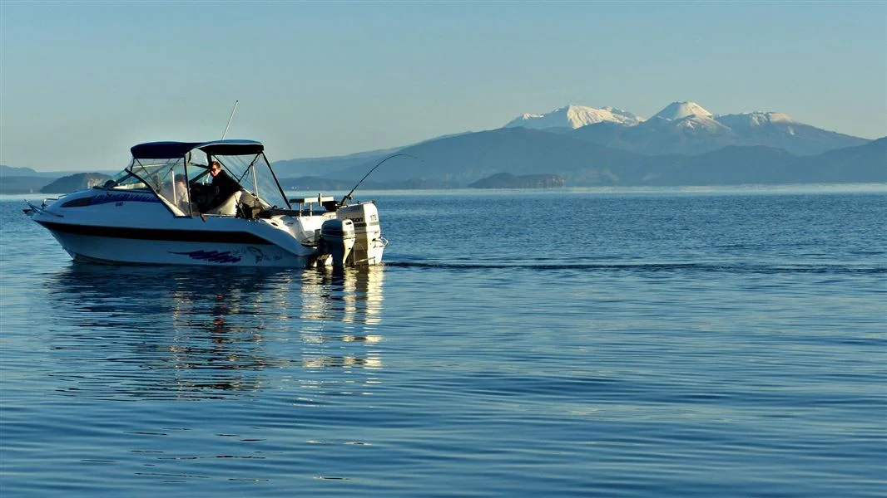

Home Locations Services Our rates are as follows:
1. $250 including GST per day per guide – maximum of 2 anglers
2. $250 including GST per day per guide and boat – maximum of 4 anglers
3. $250 including GST per day per guide and helicopter transport to location – maximum of 2 anglers
For other options contact John Hamilton.
And did you know…
That the average weight and length of rainbow and brown trout have increased about 200gm and 12mm in the past year.
